무엇을 만들고, 무료와 유료는 뭐가 다른가요
강사는 메타코드에서 기업 대상 AI(Artificial Intelligence) 교육 커리큘럼을 짜고 운영하는 PM(Project Manager)이에요. 현장에서 얻은 업무 자동화 감각을 실습 하나로 묶어 보여 주는 라이브 특강이에요. 목표는 일정 관리를 클로드 화면 하나에서 끝내는 거예요.
아래 슬라이드가 전체 지도예요. 1단계부터 4까지 빨간 시간대가 실습 구간이고, 오른쪽 '내용' 칸에 단계마다 만드는 결과물이 적혀 있어요. 등록(캘린더) → 알림(카카오톡) → 공유(아티팩트 보고서) → 정리(금요일 진척표) 순서예요.
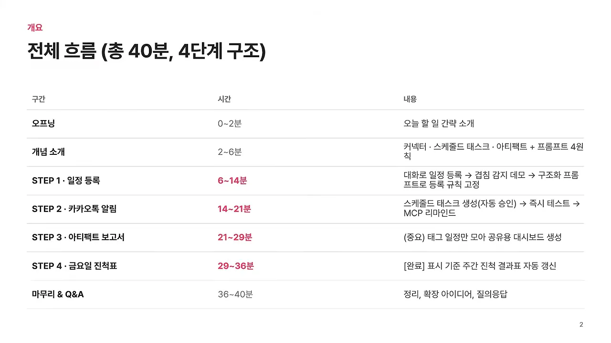
무료 플랜으로는 어디까지 되나요
참석자 중엔 무료 플랜 사용자도 있어서 차이를 먼저 짚어요. 표에서 분홍색으로 칠해진 줄이 무료와 유료가 갈리는 곳이에요. 커스텀 커넥터는 무료에서 1개만 되고, 예약됨(스케줄드 태스크)·Cowork·Claude Code·Opus 같은 상위 모델은 무료에서 X예요. 맨 아래 사용량 줄은 '무료의 5배 이상'이라고 적혀 있어요.
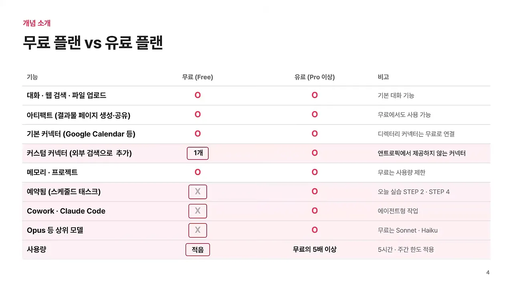
강사가 꼽는 유료 플랜의 이유는 결국 예약 작업 하나예요. 무료 플랜은 Sonnet·Haiku 모델까지 쓸 수 있고, 사용량은 Pro가 무료의 다섯 배쯤이라고 설명해요. Max 플랜으로 가면 그보다 더 늘어난다고 덧붙여요.
커넥터·예약 작업·아티팩트, 그리고 프롬프트 4원칙
실습에 들어가기 전에 기능 세 가지를 짚어요. 슬라이드의 카드 세 장이 각각 커넥터, 스케줄드 태스크, 아티팩트예요. 가운데 카드에 '서버에서 실행되므로 내 PC가 꺼져 있어도 동작합니다'라는 문장이 있어요. 오늘 실습에서 제일 중요한 성질이에요.
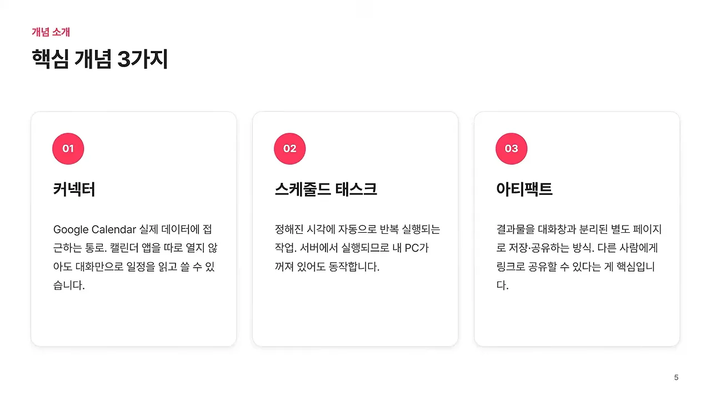
- 커넥터는 클로드가 외부 서비스를 도구처럼 쓰게 해 주는 통로예요. 오늘은 구글 캘린더와 PlayMCP를 연결해요.
- 스케줄드 태스크는 화면에서 '예약됨'으로 보이는 기능이에요. 요청 하나를 예약해 두면 클로드 서버에서 정해진 시각마다 돌아요.
- 아티팩트는 결과물을 대화창과 떨어진 한 장의 페이지로 저장해요. 링크로 다른 사람에게 보낼 수 있어요.
커넥터가 어떻게 동작하는지는 한 장으로 보여 줘요. 가운데 빨간 원이 Claude이고, 오른쪽으로 Google Calendar(커넥터), 카카오톡(PlayMCP), 그 밖의 외부 서비스가 가지처럼 뻗어 있어요. 왼쪽 설명은 커넥터도 결국 MCP 방식으로 동작하고, PlayMCP는 카카오가 만든 MCP 도구라고 말해요.
왜 이런 흐름을 짰나요
회의나 통화에서 나온 할 일은 메모장에 적어 둬도 다시 찾아보지 않으면 잊혀요. 캘린더에 넣어도 누가 리마인드해 주지 않으면 그냥 지나가기도 해요. 그래서 강사는 결과물 네 가지를 목표로 잡았어요. 슬라이드 아래 카드 네 장이 그 목록이에요.
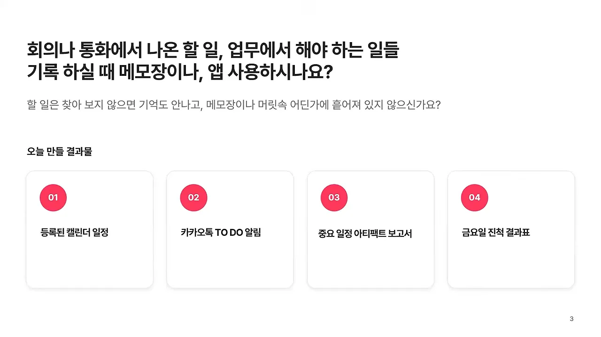
프롬프트는 네 가지만 기억해요
현장에서 가장 많이 받는 질문이 '프롬프트를 어떻게 써야 잘 알아듣느냐'래요. 강사는 정해진 틀이나 프롬프트 엔지니어링보다, 내가 뭘 원하는지 정리하는 게 먼저라고 봐요. 슬라이드의 네 칸은 목적 설계, 확인 항목 구조화, 제약조건 명시, 출력 형식 지정이에요.
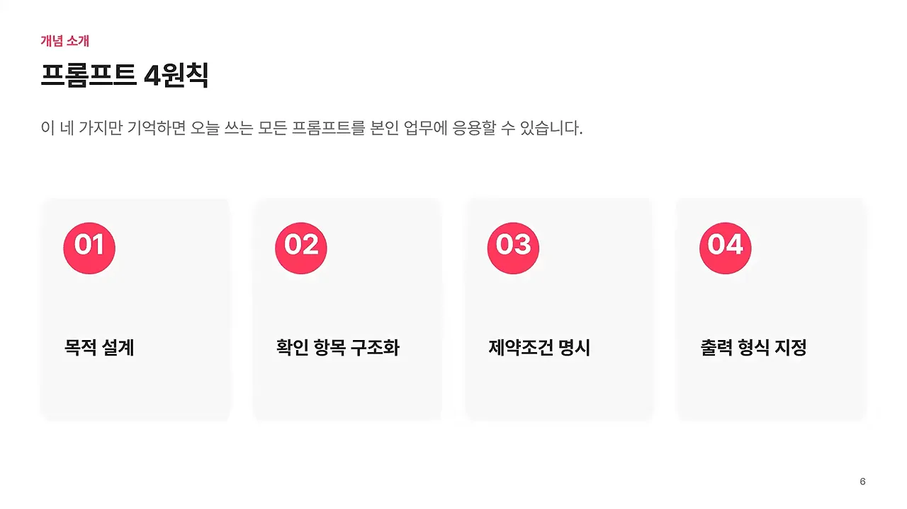
나머지는 일단 AI에게 던져 놓고 같이 맞춰 가면 된다는 입장이에요. 강사가 보여 주는 최종 프롬프트도 직접 쓴 게 아니라, 필요한 내용을 말하며 클로드와 주고받다가 클로드가 정리해 준 거래요.
1단계: 대화로 캘린더에 일정 넣기
여기서부터 클로드 데스크톱 앱으로 실습해요. 먼저 구글 캘린더를 커넥터로 붙여요.
- 채팅창의 + 버튼 → 커넥터 → 커넥터 추가 → 둘러보기로 들어가요 '인기 커넥터' 목록 맨 위쪽에 Google Calendar가 보여요
- Google Calendar의 + 버튼을 누르고 쓰는 구글 계정으로 로그인해요 연결되면 + 자리에 초록 체크가 떠요
아래 화면은 강사 쪽 커넥터 창이에요. 왼쪽 위 두 번째 줄의 Google Calendar 카드 오른쪽에 초록 체크가 있어요. 미리 연결해 둔 상태예요. 오른쪽 Notion도 연결돼 있어요.
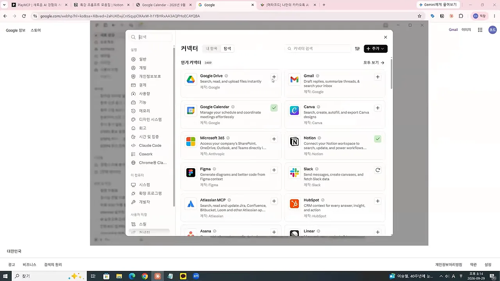
등록 규칙을 프롬프트로 고정해요
그냥 "일정 넣어 줘"만 하면 형식이 매번 달라져요. 그래서 강사는 처음에 규칙을 한 번 정해 둬요. 슬라이드의 네 칸을 보면 구조가 보여요. 왼쪽 위 '등록할 일정'에 실제 일정을 쓰고, 오른쪽 위 '앞으로 지킬 등록 규칙'에 제목 형식을 적어요. 아래 두 칸은 확인할 내용과 주의사항이에요.
강사는 노션 페이지에 이 프롬프트를 올려 두고 참석자가 복사해 쓰게 했어요. 붙여 넣으면 클로드가 "앞으로 이렇게 등록하겠다"고 답해요. 규칙에 빈 곳이 있으면 클로드가 되물어요. 그 질문에 답하면 규칙에 그대로 반영돼요.
다음은 상태 태그를 정하는 최종 프롬프트예요. 빨간 머리말 세 개가 [태그 규칙], [적용 방법], [확인할 내용]이에요. 태그 규칙 네 줄이 이 실습 전체의 뼈대예요.
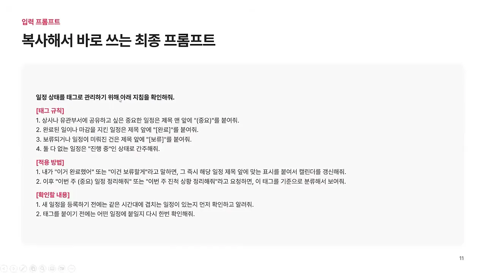
이 태그를 뒤 단계가 어떻게 쓰는지 한 장으로 그려 보면 이래요. 각 단계가 읽는 태그는 영상 속 프롬프트와 클로드의 답변에 나온 그대로예요.
등록해 보고 캘린더에서 확인해요
규칙이 들어간 상태에서 강사는 "오후 2시에 외부 미팅 일정 등록해 줘. 이건 중요한 일정이야"라고 요청해요. 클로드는 그날 일정을 먼저 조회해 오후 2~3시에 겹치는 일정이 없다고 확인한 뒤 등록해요. 캘린더 팝업을 보면 빨간 점과 함께 '[중요] 외부 미팅', 10월 2일(금요일) 오후 2:00~3:00이 보여요.
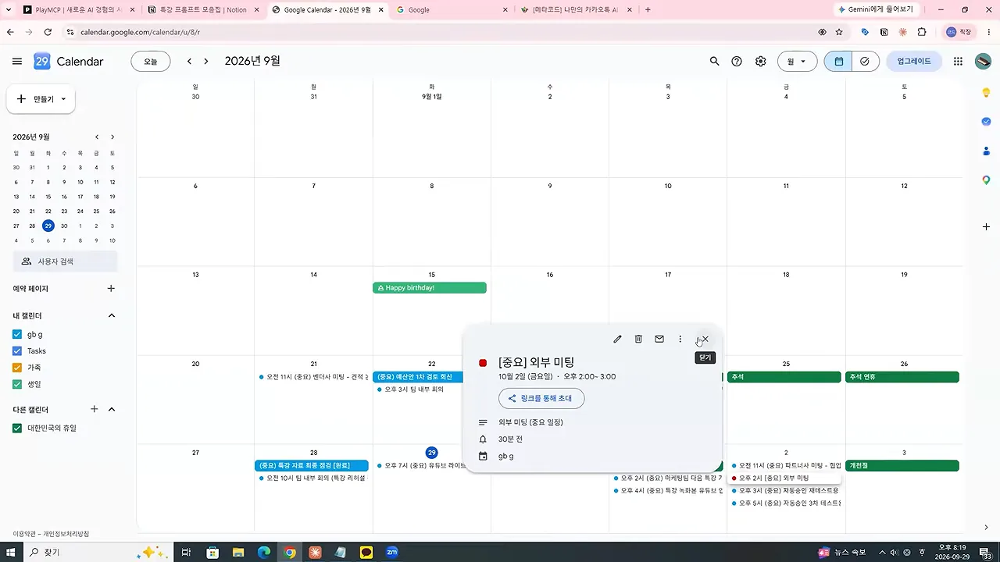
강사는 참석자에게 일정을 하나라도 직접 넣어 보라고 해요. 캘린더에 일정이 있어야 2~4단계에서 결과물이 나오기 때문이에요.
완료는 어디에 남나요
구글 캘린더에는 '완료 여부'라는 상태가 없어요. 슬라이드의 세 칸이 해결 방법이에요. 주중에 "OO 완료했어"라고 말하면, 클로드가 그 즉시 제목 앞에 [완료]를 붙이고, 금요일 예약 작업은 대화 기억 없이 그 표시만 보고 분류해요.
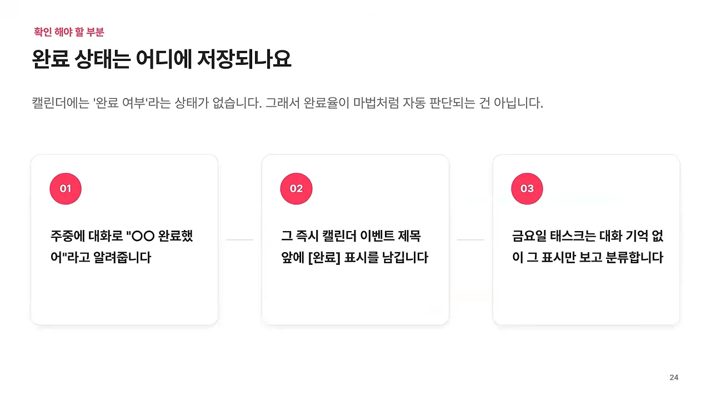
검증도 대화로 해요. 슬라이드의 문장 그대로 물어보면, 클로드가 다시 조회해서 제대로 들어갔는지 알려 줘요. 틀린 데가 있으면 그것도 짚어 줘요.
2단계: 매일 아침 카카오톡으로 할 일 받기
2단계의 목표는 매일 아침 출근길에 오늘 할 일을 카카오톡으로 받는 거예요. 먼저 원리부터 봐요. 슬라이드 위 빨간 문장이 요점이에요. 노트북을 덮고 퇴근해도, 주말에 컴퓨터를 아예 안 켜도 알림은 와요. 아래 세 칸이 그 이유예요. 한 번 예약하면(매일 8시), 내 PC 대신 클라우드 서버가 실행하고, PC 전원과 상관없이 카카오톡에 도착해요.
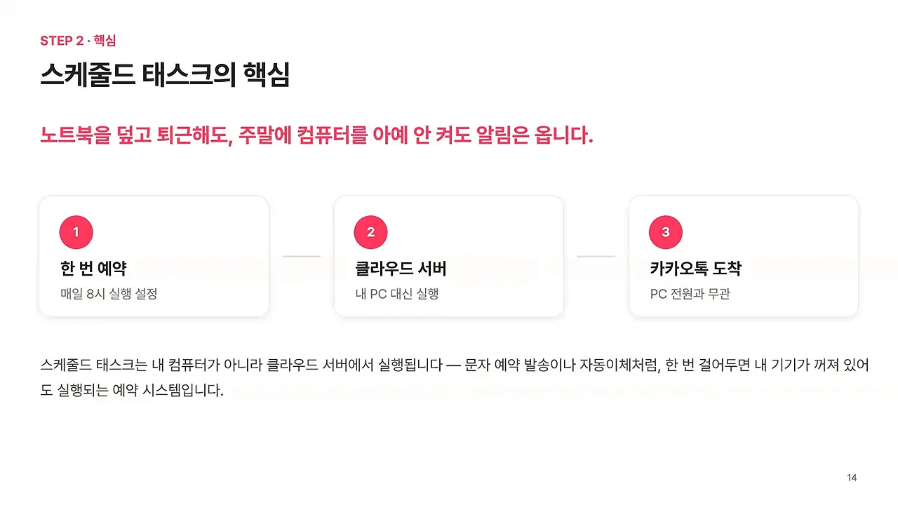
한 번 실행될 때 안에서 일어나는 일을 순서대로 그리면 이래요. 예약 작업이 캘린더 커넥터로 일정을 읽고, PlayMCP 커넥터로 카카오톡에 보내요.
sequenceDiagram participant S as 예약 작업 (클로드 클라우드) participant G as Google Calendar 커넥터 participant P as PlayMCP 커넥터 participant K as 카카오톡 나와의 채팅 S->>G: 매일 08:00 오늘 일정과 이번 주 마감 조회 G-->>S: 일정 목록 S->>S: 할 일 양식으로 정리 S->>P: 나챗방으로 보내 줘 P->>K: 메시지 도착
PlayMCP에서 카카오톡 도구 담기
검색창에 'PlayMCP'를 치면 맨 위에 playmcp.kakao.com이 나와요. 카카오가 운영하는 MCP 플랫폼이에요. 개발자들이 도구를 올리고 공유하고, 이용자는 무료로 가져다 써요. 첫 화면 아래쪽 추천 목록에 사람들이 많이 쓰는 도구가 카드로 떠 있어요. 왼쪽 아래 노란 아이콘 카드가 오늘 쓸 '카카오톡 나챗방'이에요.
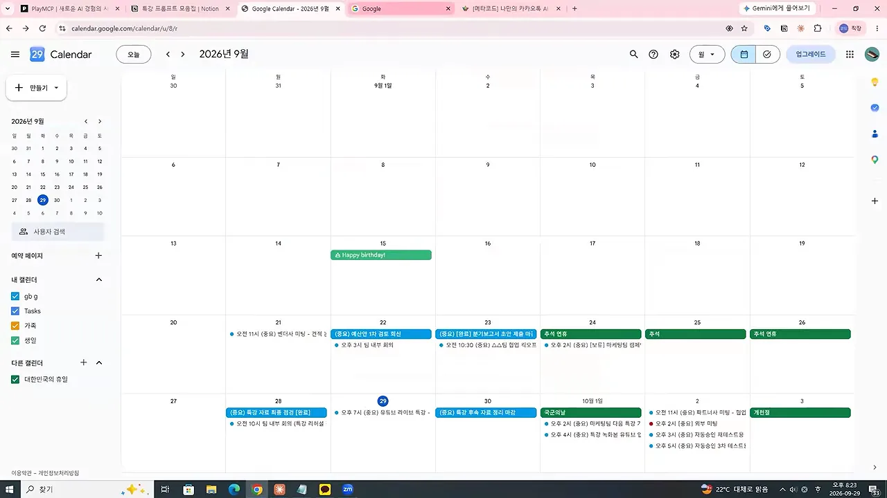
카드를 누르면 도구 상세 화면이 나와요. 이름 아래 '도구함에 추가됨' 버튼이 보여요. 아직 추가하지 않았다면 이 자리에 '도구함에 추가' 버튼이 있어요. 설명을 보면 나와의 채팅방에 텍스트 메시지를 보내는 도구이고, 실제 도구는 MemoChat 하나예요.
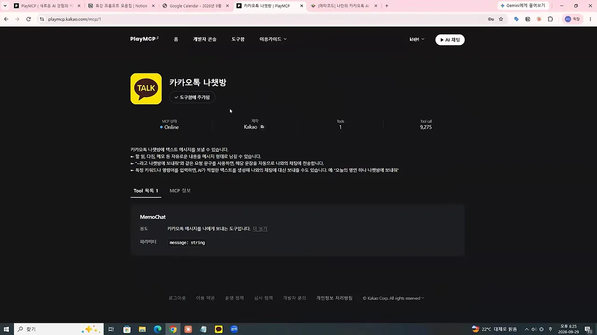
추가한 뒤 상단 메뉴의 '도구함'에 들어가 활성화 스위치가 켜져 있는지 확인해요. 강사의 도구함에는 맞춤 뉴스 브리핑, 아파트 정보, 한국 주식 정보, 부동산 청약 비서, 카카오톡 나챗방 다섯 개가 켜져 있어요. 오른쪽 위에 도구함 주소와 'Claude 연결 방법' 안내도 있어요.
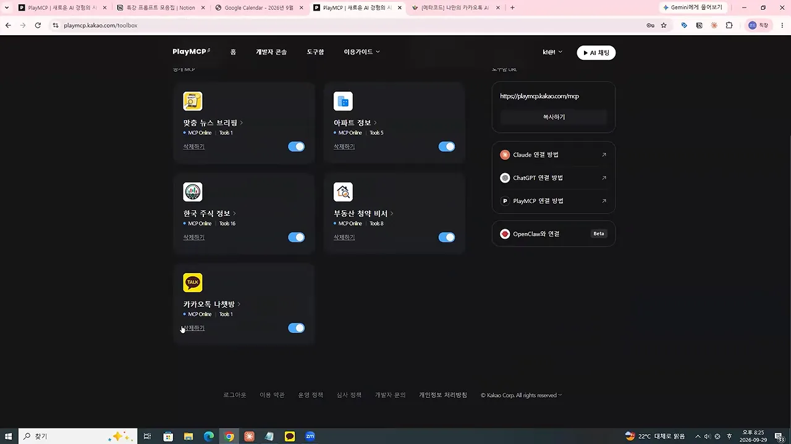
클로드에 PlayMCP 커넥터 연결하기
PlayMCP에 담았다고 끝이 아니에요. 구글 캘린더 때처럼 클로드 쪽에서도 커넥터를 연결해야 해요. 커넥터 둘러보기 검색창에 'play mcp'를 치면 맨 위에 카카오 마크가 있는 PlayMCP가 나와요. 제작자가 카카오로 돼 있고, 강사 화면에서는 이미 초록 체크가 붙어 있어요.
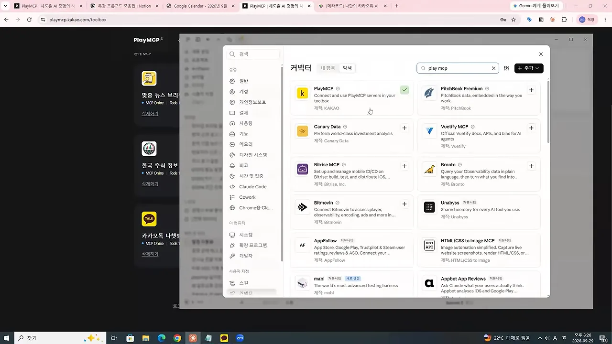
연결이 됐는지는 채팅창의 + → 커넥터 목록에서 PlayMCP 스위치가 켜져 있는지 보면 돼요.
매일 아침 8시 알림 프롬프트
마지막으로 예약 작업을 만드는 프롬프트를 넣어요. 강사는 출근이 9시라 아침 8시로 잡았어요. 슬라이드의 빨간 머리말을 위에서부터 보면 [할 일] 세 줄, ‘[TO DO LIST 양식]’, [예외 처리], [운영 조건] 순서예요. '이번 주'는 오늘이 포함된 월요일~금요일이에요. 직장인에게 주말은 이번 주가 아니라서요.
프롬프트를 넣으면 클로드가 생각을 정리한 뒤 예약 작업을 만들어요. 화면 가운데 '사고 과정'에 클로드가 카카오톡 메시지는 최대 200자라서 넘치면 항목을 줄이고 '외 N건'으로 처리하겠다고 적은 게 보여요. 오른쪽 카카오톡 창이 강사의 나와의 채팅방이에요. 9월 29일 화요일자 '오늘의 일정'과 '이번 주 할 일(마감순)'이 Kakao Tools 이름으로 와 있어요.
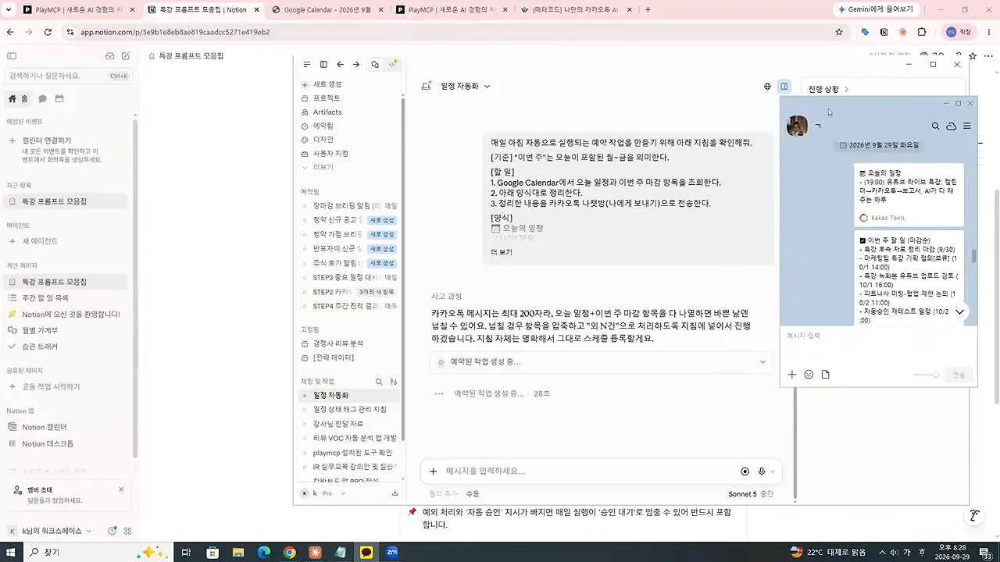
강사는 출근길에 이 메시지를 보고 무엇부터 할지 우선순위를 정한대요. 다만 예약 작업은 지정 시각보다 5~10분쯤 늦게 돌 수 있어요. 8시로 걸어 둔 알림이 실제로는 8시 10분에 왔대요.
주식·부동산 알림도 같은 방식이에요
PlayMCP를 연결해 두면 일정 말고도 받을 수 있는 게 많아요. PlayMCP 도구 목록에는 아파트 정보, 카카오맵, ‘US Stock Info’, OpenDART, KTX(Korea Train eXpress)·SRT(Super Rapid Train) 시간표, 나라장터 조달정보 같은 카드가 줄지어 있어요. 원하는 걸 도구함에 넣기만 하면 같은 방식으로 카카오톡 알림을 받을 수 있어요.
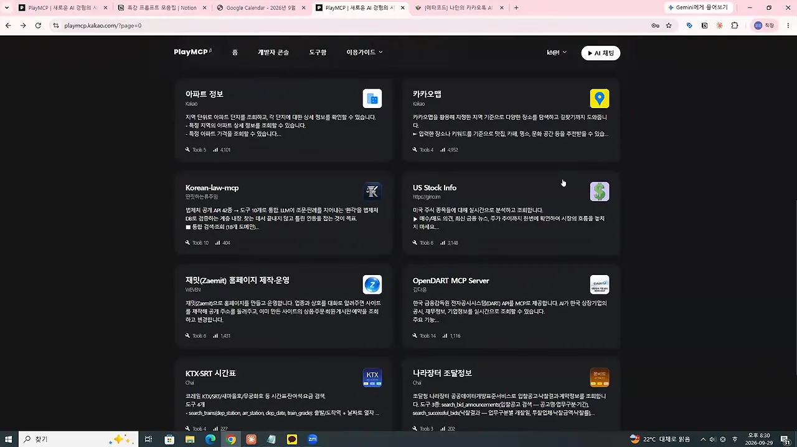
강사는 아파트 정보, 부동산 청약 비서, 한국 주식 정보를 도구함에 미리 넣고, 나챗방 알림과 같은 틀로 프롬프트를 짰어요. 노션 화면을 보면 프롬프트마다 [목적] [대상 데이터] [구성] [예외 처리] [운영 조건] 다섯 줄이에요. 위쪽 '장 시작 호가 알림'의 대상은 삼성전자(005930)와 ‘SK하이닉스’(000660)이고, 장이 열리지 않는 날엔 아무것도 보내지 않아요.
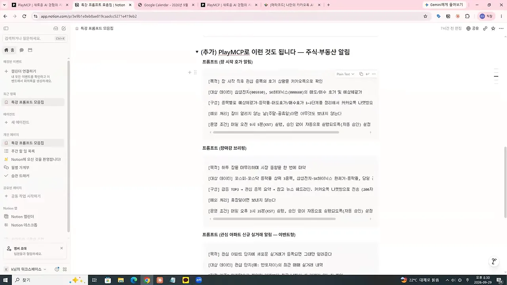
화면과 설명을 합쳐 강사가 걸어 둔 알림을 정리하면 이래요.
| 알림 | 언제 | 무엇을 보내나요 |
|---|---|---|
| 장 시작 호가 알림 | 매일 오전 9시 5분 | 삼성전자·‘SK하이닉스’의 예상 체결가와 매도·매수 호가 |
| 장마감 브리핑 | 매일 오후 3시 35분 | 코스피·코스닥 등락률 상위 3종목, 두 관심 종목의 현재가·등락률·거래량, 참고 뉴스 |
| 관심 아파트 실거래 알림 | 새 실거래가 등록될 때만 | 반포자이의 최근 실거래 내역 |
| 청약 신규 공고 알림 | 원하는 지역에 공고가 뜰 때 | 새 청약 공고 |
실제로 온 메시지
강사가 테스트로 보내 달라고 한 메시지라 앞에 [테스트] 표시가 붙어 있어요. 카카오톡 창 가운데 메시지가 9시 5분 호가 알림이에요. 삼성전자 예상 체결가 266,000원, 매도 호가 274,500원, 매수 호가 274,000원이고, 그 아래 ‘SK하이닉스’도 같은 형식이에요. 맨 아래는 15시 35분 장마감 브리핑으로, 급등 1위 종목과 두 종목의 마감 가격이 들어 있어요.
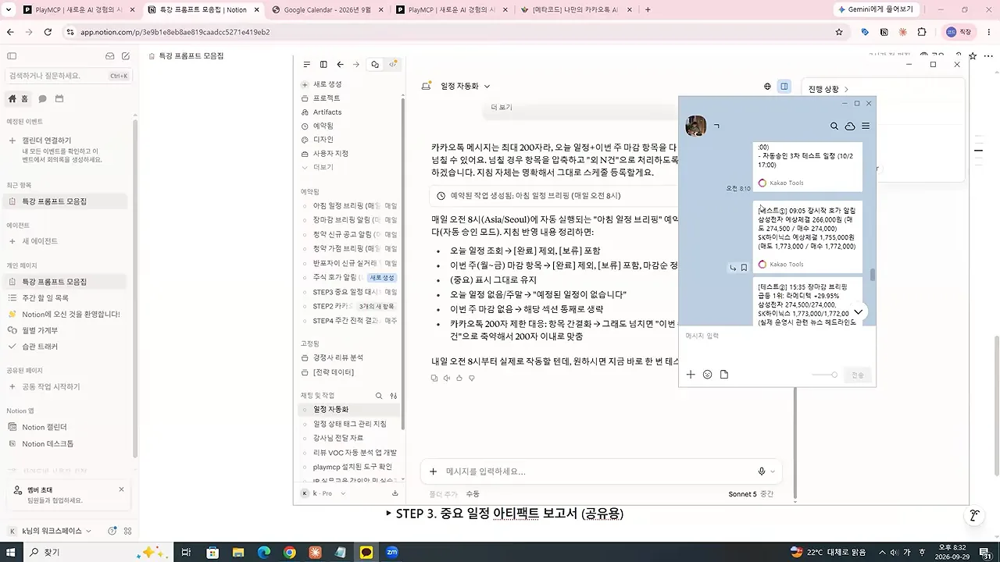
부동산 쪽도 같은 방식이에요. 메시지 가운데 '반포자이 실거래 알림'을 보면 최근 실거래가 2026년 7월 31일, 25.7평(84.94㎡), 52억 원, 5층이에요. 그 아래에는 앞으로는 새 거래가 등록될 때만 알린다는 문장이 붙어 있어요. 강사도 이 가격에 놀라워해요.
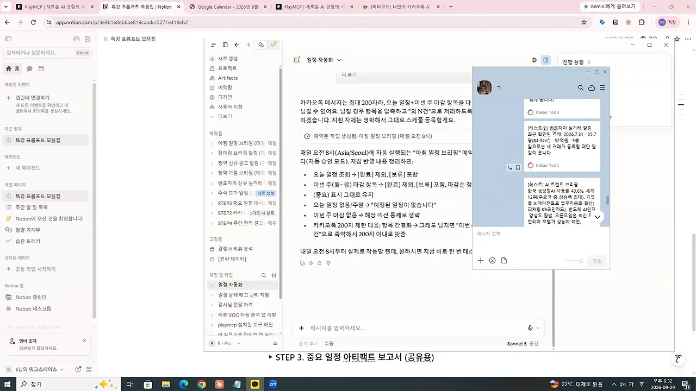
강사가 이 특강에서 꼭 가져가라고 한 포인트가 이거예요. 일정만이 아니라 PlayMCP에서 원하는 도구를 고르면, 아침·저녁·특정 날짜·특정 이벤트에 맞춰 무엇이든 카카오톡으로 받을 수 있어요. 참석자에게는 "테스트로 일정 등록한 거 나한테 한번 보내 줘"라고 요청해서 나챗방으로 메시지가 오는지 확인하게 해요. 도착까지 조금 걸릴 수 있어요.
3단계: 중요 일정을 공유용 아티팩트로
3단계 표지에는 '카카오톡 알림은 나 혼자 보는 용도, 아티팩트는 공유하는 용도'라고 적혀 있어요. 1단계에서 중요하다고 말한 일정에는 (중요) 표시가 붙어 있어요. 이 일정만 모아 상사나 팀원에게 보여 줄 보고서를 만드는 단계예요. 노션의 프롬프트 모음집 3번 '아티팩트 생성' 프롬프트를 복사해 클로드에 넣으면 돼요.
강사가 미리 만들어 둔 결과물이 아래 '이번 주 중요 일정' 대시보드예요. 위에 카드 세 장이 있어요. 이번 주 (중요) 일정 8건, 가장 임박한 마감 D-2, 외부·협업 미팅 3건이에요. 아래로 일정이 하나씩 이어지고 오른쪽에 D-1, 오늘, 보류, 예정 같은 상태가 붙어 있어요.
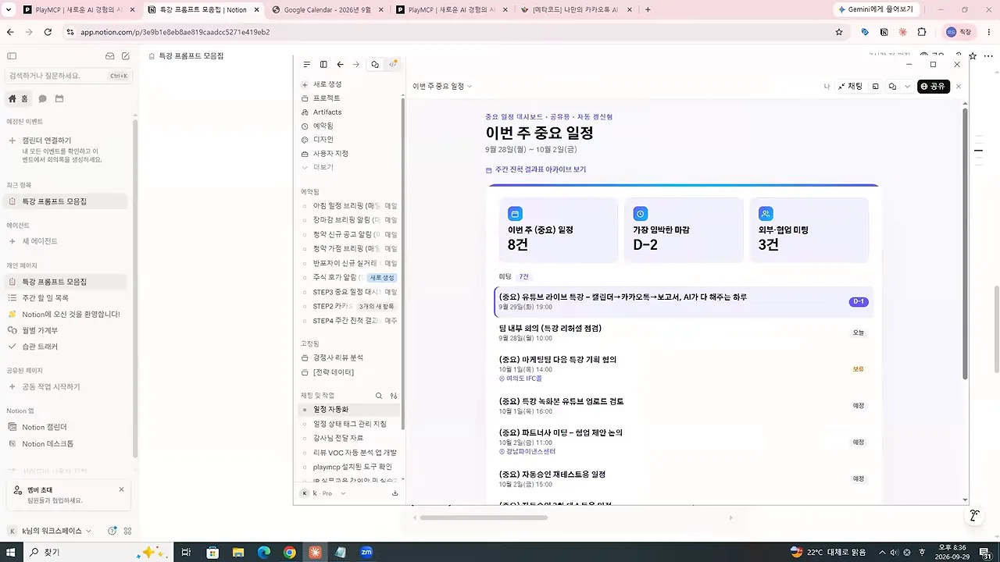
이 아티팩트도 예약 작업으로 갱신돼요. 프롬프트를 넣으면 예약을 만들겠다는 승인 요청이 오고, 승인하면 '예약됨' 목록에 작업이 생겨요. 화면의 작업 이름은 '이번 주 중요 일정 대시보드 갱신 (매일 오전 9시)'이에요. 지침 칸에 이미 만든 대시보드의 아티팩트 URL(Uniform Resource Locator)이 적혀 있고, 아래 '권한'은 자동 승인이에요.
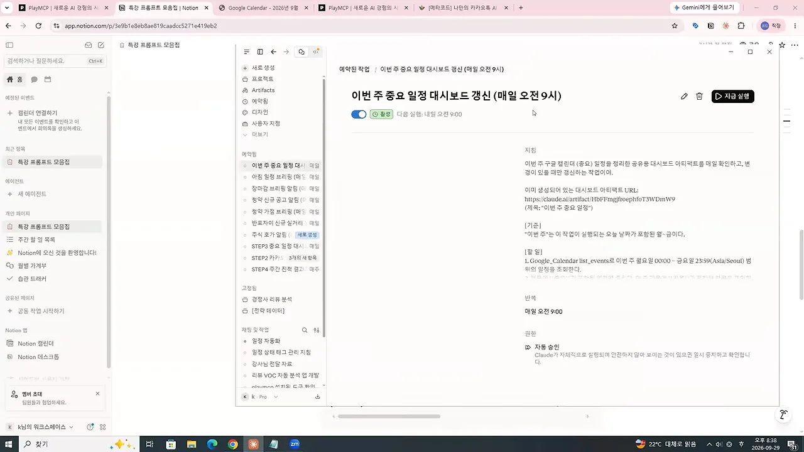
강사는 실무에서 이렇게 써요
교육 회사라 강사님들과 연락할 일이 많대요. 고객사가 원하는 교육 내용과 일정을 텍스트로 정리해 보내면, 쓰는 쪽도 번거롭고 받는 쪽도 읽기 힘들어요. 그래서 요청 내용을 아티팩트 한 장으로 만들어 링크로 보내요. 화면은 예시 문서예요. 위에 기업, 3시간, 10/28(수) 10:30~13:30, 장소, 오프라인 30명이 칩으로 정리돼 있고, 아래 '강의 개요(확정)' 표에 강의명과 일시가 들어 있어요.
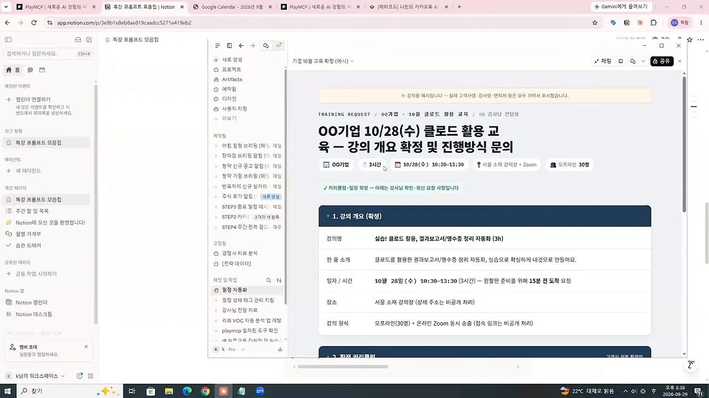
강사의 말로는, 오늘은 일정 확인용으로 썼지만 아티팩트는 공유할 보고서라면 어디든 쓸 수 있어요.
4단계: 금요일 오후 진척표
마지막 단계는 한 주를 마감하는 진척표예요. 금요일 오후 5시쯤, 캘린더를 열지 않아도 이번 주에 완료·미완료·보류가 몇 건인지 예약 작업이 알아서 보여 줘요. 업무 보고 자료로도 쓸 수 있어요.
최종 프롬프트는 일곱 줄이에요. 눈여겨볼 곳은 [판정 기준]과 [갱신 대상]이에요. 제목에 [완료]가 있으면 완료, [보류]가 있으면 보류, 둘 다 없으면 진행 중이에요. 그리고 3단계에서 만든 대시보드 아티팩트의 URL을 붙여 넣고 반드시 먼저 읽은 뒤 같은 페이지를 갱신하게 해요.
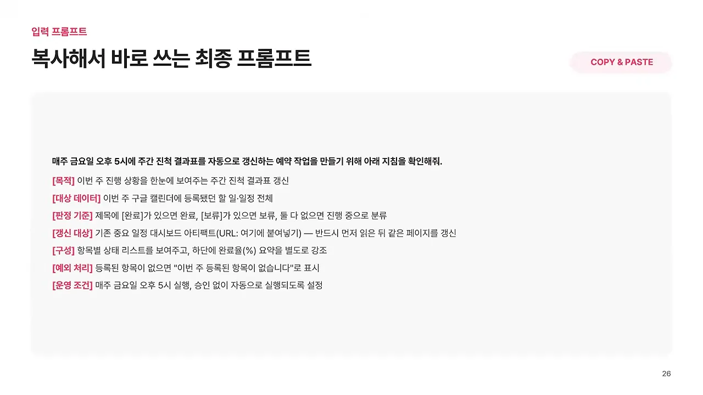
노션에는 '고도화' 버전 프롬프트도 있어요. 강사가 처음 짠 구조를 클로드와 주고받으며 넣고 빼다 보니 길어진 거래요. 그 고도화된 프롬프트도 결국 클로드가 써 줬어요. 간단한 개요만 구조화해서 던지면 거기서부터 다듬을 수 있다는 얘기예요.
결과 화면
'진척표 9월 4주차' 아티팩트예요. 위 카드 세 장이 완료 1건, 보류 1건, 진행 중 4건이에요. 그 아래 주황 띠가 내일(9월 30일) 마감인데 아직 진행 중인 항목을 경고해요. 항목별 상태 목록이 이어지고, 맨 아래 전체 완료율이 17%예요. 6건 중 1건이 끝났으니 맞는 숫자예요.
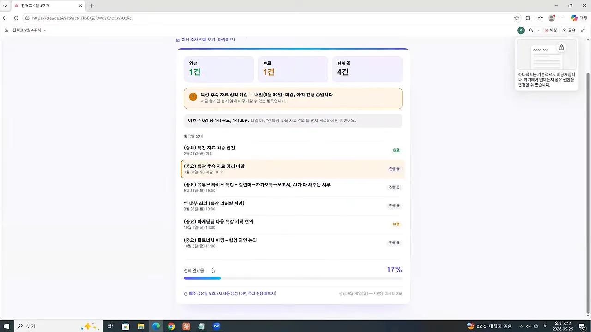
강사는 몇 주 차에 무엇을 했는지 쌓아 두고 싶어서 누적 버전도 만들었어요. 오른쪽 '진척표 아카이브'에 '2026년 9월 4주차 (9/28~10/2), 17%' 한 줄이 있고, 매주 금요일 5시마다 새 주차가 맨 위에 추가돼요. 왼쪽 대화에는 지금까지 만든 아티팩트 링크 네 개가 정리돼 있어요.
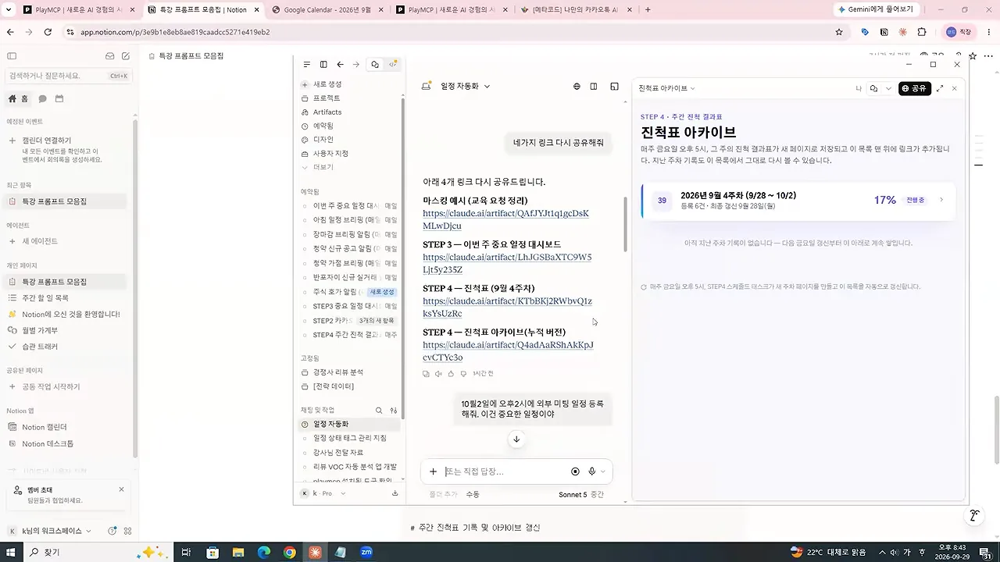
강사는 이 진척표를 다음 주 최우선 업무를 정하는 용도로 설계했어요. 팀 구글 캘린더를 연결할 수 있다면 팀 단위 대시보드로도 키울 수 있대요.
네 조각을 하나의 흐름으로
강사는 진척표 프롬프트에 목적, 데이터, 판정 방법, 갱신 기준, 구성을 한 줄씩 던졌을 뿐인데 이런 결과가 나왔다고 정리해요. 그리고 네 단계를 하나로 이어 보여 줘요. 슬라이드 위 줄이 1~4단계의 이름이고, 아래 카드 네 장이 한 문장으로 이어져요. 대화로 일정을 등록하면, 매일 아침 카카오톡으로 ‘TO DO’를 받고, 중요한 건 아티팩트 보고서로 정리되고, 금요일엔 한 주의 진척이 결과표가 돼요.
세 가지 예약 작업을 한데 놓고 보면 각자 언제 돌고 무엇을 읽는지가 분명해요. 영상 속 프롬프트와 예약 작업 화면에 나온 그대로예요.
| 단계 | 언제 도나요 | 무엇을 읽나요 | 결과는 어디로 가나요 |
|---|---|---|---|
| 2단계 아침 알림 | 매일 오전 8시 | 오늘 일정, 이번 주(월~금) 마감 항목 | 카카오톡 나와의 채팅 |
| 3단계 중요 일정 대시보드 | 매일 오전 9시 | (중요)가 붙은 이번 주 일정 | 공유용 아티팩트(같은 URL 갱신) |
| 4단계 주간 진척표 | 매주 금요일 오후 5시 | 이번 주 일정 전체와 [완료]·[보류] 표시 | 진척표 아티팩트와 아카이브 |
강사는 많은 사람이 업무 자동화를 어렵게 여기거나 해 본 적이 없어서 모른다고 봐요. 이렇게 흐름 하나하나를 엮어 워크플로를 만들면 누구나 연습할 수 있다는 거예요. 클로드는 레고 같아서 집도 자동차도 만들 수 있지만, 가지고 놀지 않으면 아무것도 안 나온다고 비유해요.
결국에는 그걸 가지고 놀지 않으면 아무것도 만들 수 없는 거거든요.
— 영상 39:36
확장 아이디어 다섯 가지
마지막 슬라이드에는 번호 붙은 아이디어 다섯 줄이 있어요. 1번은 개인 구글 계정으로 약속·병원 예약·경조사까지 넓히는 거예요. 강사는 갤럭시의 삼성 캘린더가 구글 캘린더와 연동돼서 휴대폰에서 넣은 일정도 같이 들어간다고 덧붙여요. 4번은 1단계의 등록 규칙을 클로드 스킬로 만들어 새 대화에서도 유지하는 거예요. 5번은 클로드 코드로 아티팩트를 데이터베이스가 붙은 웹페이지 대시보드로 키워 기록을 남기는 거예요.
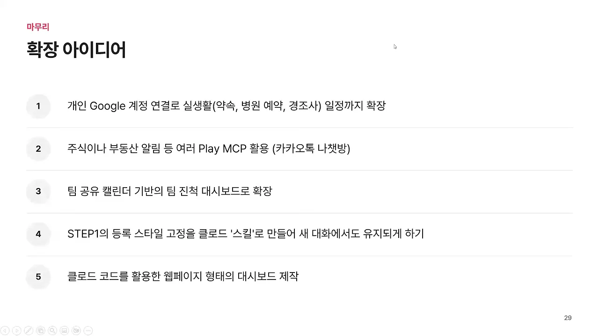